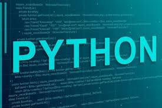

3. Código en Python
def hola_mundo():
print("¡Hola, mundo!")

HTML es el lenguaje de marcado que se utiliza para crear sitios web. Es uno de los pilares fundamentales del desarrollo web y es utilizado por los desarrolladores de todo el mundo para crear sitios web que van desde simples páginas personales hasta complejos sitios de comercio electrónico.
HTML es el lenguaje de marcado que se utiliza para crear sitios web. Es uno de los pilares fundamentales del desarrollo web y es utilizado por los desarrolladores de todo el mundo para crear sitios web que van desde simples páginas personales hasta complejos sitios de comercio electrónico.
HTML es el lenguaje con el que se define el contenido de las páginas web. Básicamente se trata de un conjunto de etiquetas que sirven para definir el texto y otros elementos que compondrán una página web, como imágenes, listas, vídeos, etc.

Python es conocido por su sintaxis clara y legible, lo que facilita su aprendizaje y uso. Fue creado por Guido van Rossum y lanzado por primera vez en 1991. Python es muy popular en diversos campos como el desarrollo web, la ciencia de datos, la inteligencia artificial, la automatización de tareas, y más.
Para crear enlaces a otras páginas se usa la etiqueta <a>:
<a href="https://www.python.org">Visitar Python</a>
enlace a la pagina de python

Ejemplo de una lista con temas de Python:

Ejemplo de una tabla con funciones matemáticas en Python:
| Función | Descripción |
|---|---|
abs(x) |
Valor absoluto de x |
pow(x, y) |
x elevado a la potencia y |
round(x) |
Redondea x al entero más cercano |
Los formularios permiten la interacción con el usuario:

Se pueden agregar imágenes y videos a las páginas web.
